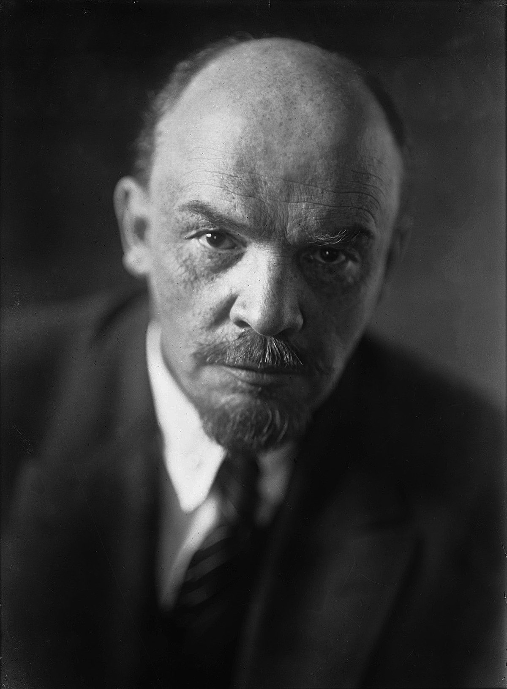

I'll be telling you about some of my favorite proletarian revolutionaries here.
Vladimir Lenin

Born in blah blah blah, he lead the Bolsheviks to seize power after the end of the Russian Civil War and helped establish the world's very first proletarian state. A foundational head of Marxism, he was also an excellent scholar, theorist, and organizer.
Based level: one trillion
Mao Zedong
Born in whatever, he led a succesfull protracted people's war against the Japanese imperial army, and then against the KMD reactionaries, pushing them back to the island of Taiwan. He helped bring Marxism-Leninism to a new level with contributions such as people's war and cultural revolution.
Based level: also one trillion
Karl Marx
Karl Heinrich Marx was a German philosopher, critic of political economy, historian, sociologist, political theorist, journalist and socialist revolutionary.
Friedrich Engels
Friedrich Engels, sometimes anglicised as Frederick Engels (28 November 1820 – 5 August 1895), was a German philosopher, critic of political economy, historian, political theorist and revolutionary socialist.
This is the first item in an ordered list.
This is the second item in an ordered list.
I am learning some basic HTML skills so I can strengthen my abilities as a web developer. Here are some examples of breaks within a paragraph.